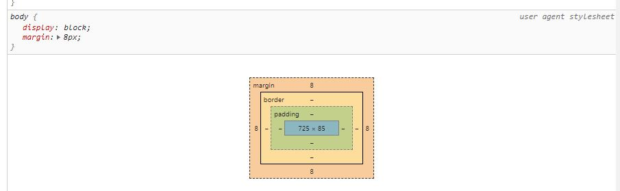

Normalement, cette "boite" de type bloc est automatiquement décollée des bord de la fenêtre de 8px. Cette règle s'applique car faute de règle définie par nous, le navigateur utilise sa propre feuille de style par défaut. On peut le voir en examinant l'élément dans le navigateur (on le voit mieux sur Chrome que sur FireFox). 
Ici cette règle par défaut a été remplacée par une initialisation de margin et padding à 0 de body.
Cette boite va servir d'exemple 1. Les règles s'appliquent à la boite de contenu grâce à la règle box-sizing: content-box; . Ces informations sont importantes car l'exemple 2 aura les mêmes règles à l'exception de box-sizing: et cela changera son comportement.
Cette boite va servir d'exemple 2. Les règles s'appliquent à toute la boite grâce à la règle box-sizing: border-box; . Ces informations sont importantes car cette exemple 2 a les mêmes règles à l'exception de box-sizing: et cela change son comportement. Ici la largeur spécifiée s'applique à l'ensemble de l'élément et non à son seul "contenu". C'est cette règle qu'appliquent les templates modernes tels que Bootstrap !